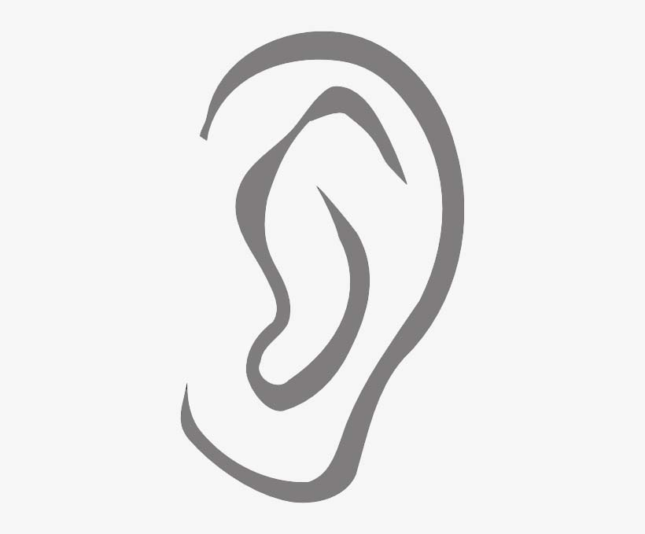

{% extends "base.html" %}


{%block title%}Authenticate{%endblock%}


{%block head%}
{{ super() }}
<style>
    #earimageo {
      -webkit-filter: grayscale(100%); /* Safari 6.0 - 9.0 */
      filter: grayscale(100%);
    }
</style>
{%endblock%}


{%block content%}

<div class="container">
    <div class="row justify-content-center align-items-center">
        <div class="text-center col-10 col-md-8 col-lg-6">

            <h1 class="md-5">Ear Authentication</h1>
            Ear Based Biometric system <br >
            (Army Institute of Technology)
            <br>
            <form action="" method="post" enctype="multipart/form-data">
                
                {{form.hidden_tag()}}
                {% for ele in form %}
                {% for error in ele.errors %}
                    <span style="color: red;">{{error}}</span>
                    <br>
                {% endfor %}
                {% endfor %}
                
                <div class="">
                    
                </div>
                Ear Picture

                
                <br>
                <div class="row">
                    Ear Image<i style="color: red; width:auto; padding:0%;">*</i>: {{form.earphoto(class="form-control", id="earimage")}}
                    
                </div>
                <br>
                {{form.databasetype()}}
                <div class="row">{{form.submit(class="btn btn-success")}}</div>
            </form>
            <br>

        </div>
    </div>
    <div class="col-md-12" style="background-color: rgb(255, 251, 251); border-color:black; border-style: solid; border-width: 1px;">
        <b>Instructions:</b>
        <br>
        To ensure that the ear image is clear and suitable for generating a high-quality feature vector, follow these tips:
        <ul>
          <li>Remove any earrings or other ornaments from the ear before taking the image.</li>
          <li>Position the camera directly perpendicular to the ear to avoid any distortion or skew.</li>
          <li>Make sure the room is well-lit to minimize any shadows or glare on the ear.</li>
          <li>Remember that all fields are required to be filled out, so double-check your information before submitting.</li>
          <li>Verify that all the fields are filled correctly, check the spelling and accuracy of all the information before submitting the form.</li>
          <li>Make sure that the image is in focus and not blurry or pixelated.</li>
          <li>If possible, use a high-resolution camera to capture the image.</li>
          <li>Avoid any reflections or glare on the image.</li>
          <li>Ensure that the ear is centered in the frame and take the photo in a well-lit and neutral background.</li>
        </ul>
      </div>
</div>
<script>
    function updateEar(){
        var selectedFile = document.getElementById("earimage").files[0];
        var img = document.getElementById('earimageo')

        var reader = new FileReader();
        reader.onload = function(){
            img.src = this.result
        }
        reader.readAsDataURL(selectedFile);
    }
    
    document.getElementById("earimage").addEventListener("change", updateEar);
    
</script>
{%endblock%}


{%block footer%}
{{ super() }}
{%endblock%}